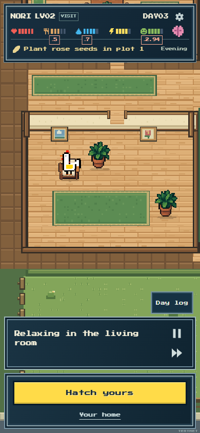
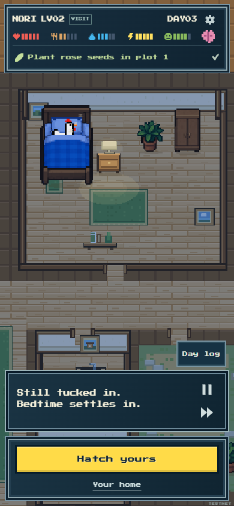
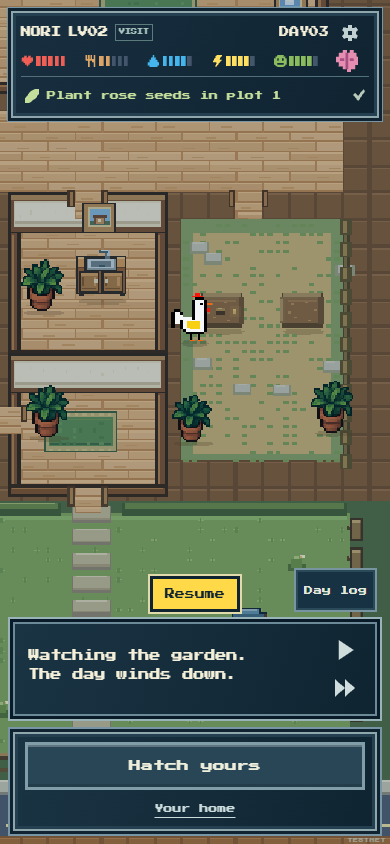
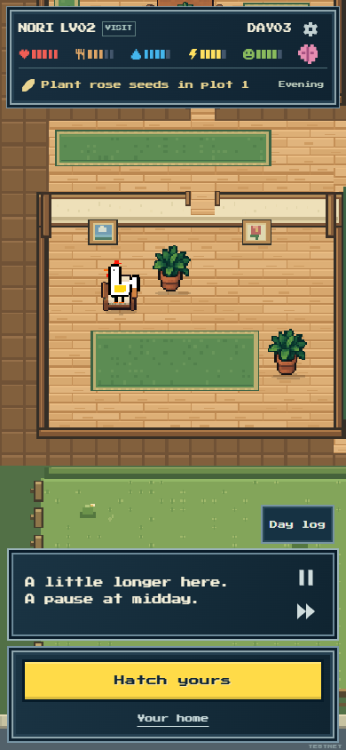
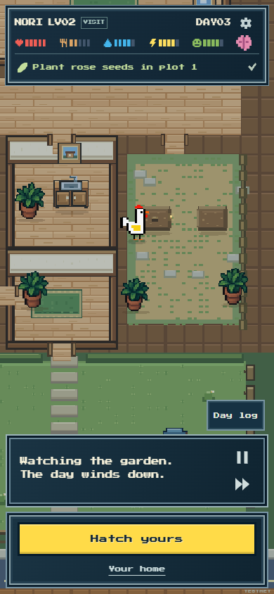
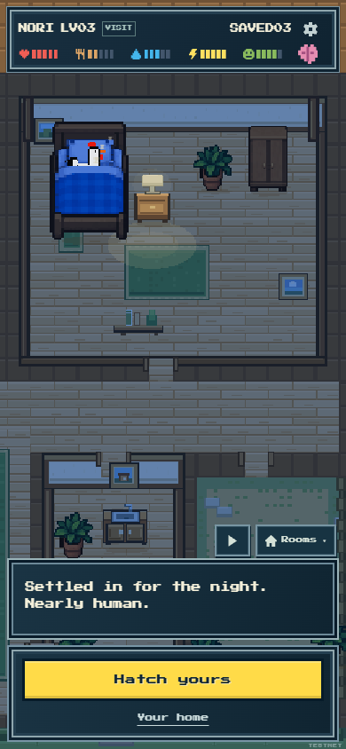
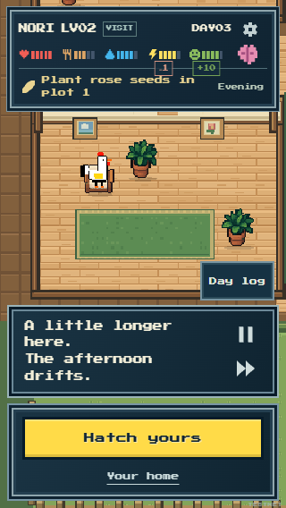
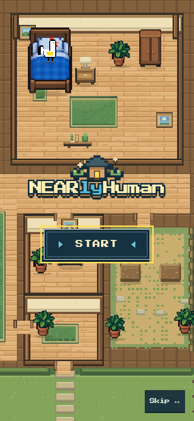

A calmer daily rhythm
Actual NEARlyHuman pixels from the live baseline and the local refinement. Short observations and continuous contact give ordinary moments room to breathe while preserving the rooster’s recorded choices.
NORI #4 · Canonical saved day 3 · 390 × 844. These targeted screenshots are separated from the full natural-day timing evidence. No new AI call, wallet transaction or game-state change was required to capture them.

Before: the afternoon repeatsLive baseline · natural full dayActual public CPac build. The seated stretch repeatedly resets generic quiet text between recorded relaxation and sitting choices.
After: one continuing restUpdated source · targeted replayAn explicit player seek to receipt 21, followed by natural playback. The same seated contact retains its caption through the routine and nearby quiet time.

Quiet time after a napUpdated source · targeted replayActual bed contact receives a short bedtime observation. This still is a quiet passage after the nap, rather than the final saved-day ending.

A small garden visitorUpdated source · targeted paused captureA faint firefly beside an actual plot contact. This paused capture illustrates a subtle cosmetic cue; it is not a full-day continuity or timing witness.
Final natural day
The final compiled day took 68.093s in this viewing, compared with 69.646s live before. Its seated portion fell from 14.295s to 11.899s. The improvement is a more coherent ongoing rest, with seven identical quiet-caption resets removed. These are bounded viewing observations, not device benchmarks. Full after proof · Comparison

One continued restNatural full day · final Cck buildThe same calm seated contact continues without reannouncing arrival or resetting generic text.

An evening garden momentNatural full day · final Cck buildThe small gold firefly appears beside the actual plot, above its surface. No extra activity or benefit is invented.

The same saved dayNatural full day · final Cck buildFinal needs, six item counts, plots and all sixty original log entries agree with the unchanged canonical recording.

Quiet time on a small phoneFinal Cck build · targeted 320×568 checkOne explicit log seek, then four seconds of natural continuing rest. Text and controls remain reachable with no document overflow.
Bounded verification records
live-before.json · timing-witness.json · routine-before.json · routine-after.json · quiet-presence-witness.json · vignette-witness.json · motion-changes.json · motion-after.json
The timing/helper witnesses use the existing saved packet or explicitly labelled synthetic presentation cases. The before and after browser records preserve their actual origin, source stage and seek boundaries. Viewing times are observations rather than device benchmarks.
Published website
Final Cck build, verified on nearlyhuman.netlify.app after the single production update. Public proof · Release record

Published title390 ×844 · actual public gameSame native house and title; verified final application bytes and unchanged preview.
 Published continuing rest320 ×568 · actual public game
Published continuing rest320 ×568 · actual public gameOne explicit log seek, then natural continuing rest. No page overflow, errors or API writes.